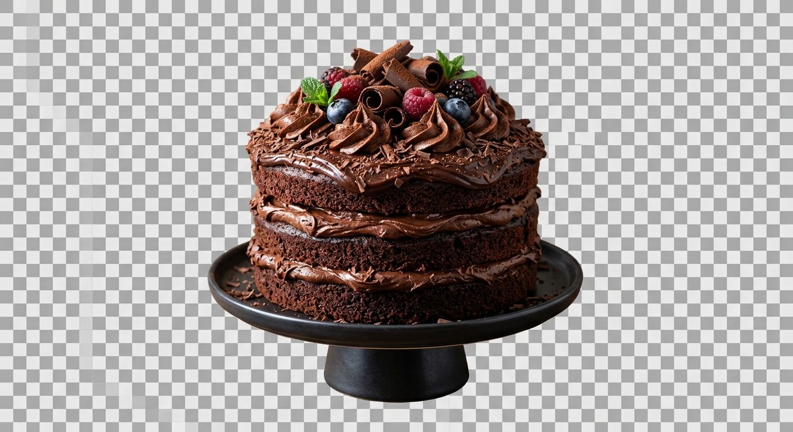

Meu primeiro post
Por: Bruna dos Santos.
Boas vindas ao meu blog! Aqui você vai encontrar diversas receitas deliciosas para fazer com sua familia!palavra Receita de bolo de chocolate!
Aqui vou compatilhar receitas deliciosas para fazer com sua familia!
Por: Bruna dos Santos.
Boas vindas ao meu blog! Aqui você vai encontrar diversas receitas deliciosas para fazer com sua familia!palavra Receita de bolo de chocolate!

Por: Bruna dos Santos.
Por: Bruna dos Santos.
Bolo de cenoura 🥕🍰
Ingredientes:
- 3 cenouras médias
- 3 ovos
- ½ xícara de óleo
- 2 xícaras de açúcar
- 2½ xícaras de farinha de trigo
- 1 colher (sopa) de fermento
Preparo:
1. Bata cenoura, ovos e óleo no liquidificador.
2. Misture com açúcar e farinha.
3. Acrescente o fermento delicadamente.
4. Asse a **180 °C por cerca de 40 min**.
Cobertura: misture
4 colheres de chocolate, 2 de açúcar, 2 de manteiga e 4 de leite, ferva até engrossar e despeje sobre o bolo.